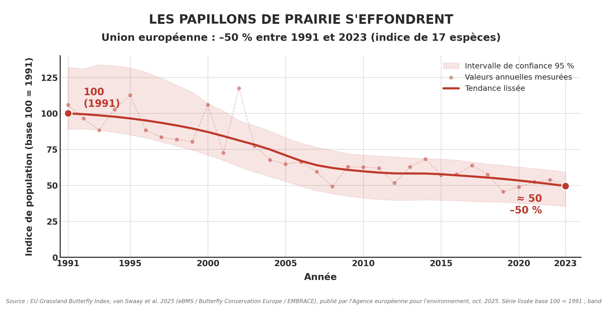
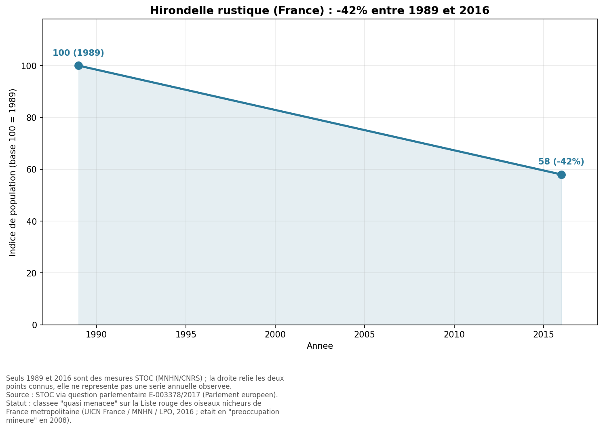
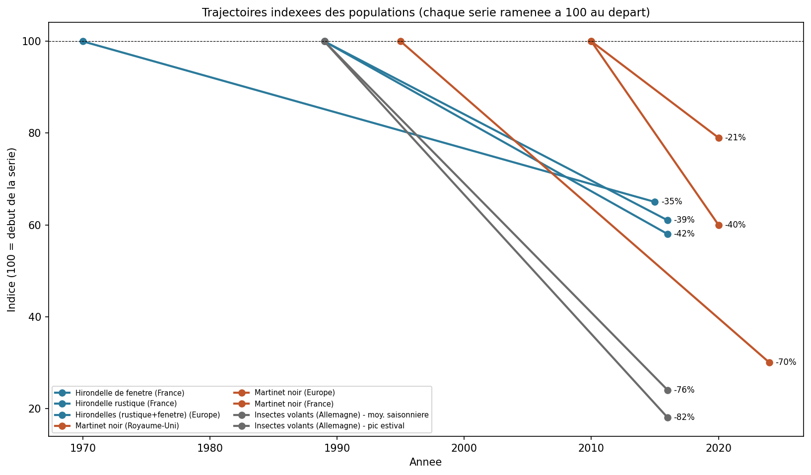

Especes indicatrices suivies en Europe, espece par espece
Juillet 2026
Certaines especes reagissent vite aux modifications de leur milieu, ce qui en fait de bons indicateurs de l'etat des ecosystemes. Cette page rassemble, espece par espece, des indicateurs officiels bases sur des series de comptage de terrain — pas des estimations.
L'Indice des papillons de prairie de l'UE (EU Grassland Butterfly Index, GBI) suit l'evolution de l'abondance de 17 especes de papillons typiques des prairies dans les 27 Etats membres de l'Union europeenne. L'annee 1991 sert de reference (base 100).
Il ne repose pas sur des estimations : les donnees proviennent de comptages standardises effectues sur le terrain le long de transects fixes, dans le cadre du European Butterfly Monitoring Scheme (eBMS), coordonne par Butterfly Conservation Europe et le UK Centre for Ecology & Hydrology. Depuis 1990, plus de 9 600 transects ont contribue a l'indice ; en 2024, plus de 3 800 transects ont ete comptes a travers 28 dispositifs de suivi nationaux. Une grande part de ce travail est realisee benevolement — un exemple de science participative a l'echelle continentale.

Source : van Swaay et al. (2025, 2026), Butterfly Conservation Europe / EEA
Selon le rapport technique EU Grassland Butterfly Index 1991-2023 (van Swaay et al., 2025), l'indice est 50 % plus bas en 2023 qu'en 1991. La mise a jour la plus recente, qui prolonge la serie jusqu'en 2024 avec une methode de calcul revue, etablit le declin a 47 % entre 1991 et 2024.
Le declin est principalement tire par les especes specialistes, les plus exigeantes en matiere d'habitat, dont les effectifs diminuent de facon continue depuis 2003. La Liste rouge europeenne des papillons 2025 classe quatre de ces especes comme quasi menacees dans l'UE : Erynnis tages, Lysandra bellargus, Phengaris arion et Phengaris nausithous.
Les causes documentees dans les rapports de suivi sont, selon les regions :
Le GBI est utilise comme indicateur de suivi dans la Strategie de l'UE pour la biodiversite a l'horizon 2030 et est mentionne dans le Reglement sur la restauration de la nature (2024) parmi les indicateurs que les Etats membres peuvent retenir pour les ecosystemes agricoles.
D'apres le Suivi temporel des oiseaux communs (STOC), mene par le Museum national d'histoire naturelle et le CNRS, l'indice de population de l'Hirondelle rustique en France est passe de 100 en 1989 a 58 en 2016, soit un recul de -42 %.

Source : STOC (MNHN/CNRS) via question parlementaire E-003378/2017
L'hirondelle rustique, l'hirondelle de fenetre et le martinet noir ont un point commun : ce sont des insectivores aeriens, qui capturent la totalite de leur nourriture en vol. Les suivis montrent un recul dans le meme sens pour l'ensemble de ce groupe.
Pour le martinet noir, la LPO (d'apres Vigie-Nature) rapporte une baisse de l'ordre de -40 % en une dizaine d'annees en France. L'espece est en declin marque au Royaume-Uni, ou le British Trust for Ornithology (BTO) chiffre la baisse a -70 % entre 1995 et 2024, ce qui lui a valu d'etre classee sur liste rouge en 2021 ; a l'echelle europeenne en revanche, la tendance de long terme est globalement stable depuis 1980 (PECBMS).
Deux facteurs sont documentes pour ces especes qui nichent dans le bati : la perte de sites de nidification (les renovations et l'isolation par l'exterieur bouchent les cavites des facades) et la rarefaction des insectes dont elles se nourrissent.

Le graphique ramene chaque serie a 100 a son annee de depart, afin de rendre les pentes directement comparables entre especes et entre pays, malgre des periodes de suivi differentes.
Puisque ces oiseaux dependent entierement des insectes volants, l'evolution de ces derniers eclaire la leur.
L'etude de Krefeld (Hallmann et al., 2017) a mesure la biomasse totale d'insectes volants dans 63 espaces proteges d'Allemagne, a l'aide de pieges standardises, entre 1989 et 2016. Sur ces 27 ans, elle constate un declin de 76 % en moyenne saisonniere, atteignant 82 % au coeur de l'ete.
Les auteurs soulignent que cette perte doit etre prise en compte pour comprendre le recul des especes qui dependent des insectes comme source de nourriture — ce qui est precisement le cas des hirondelles et des martinets.
Donnees : European Butterfly Monitoring Scheme (eBMS) — Butterfly Conservation Europe & UK Centre for Ecology & Hydrology, projet EMBRACE.